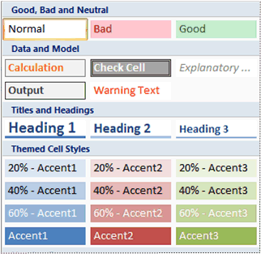

To apply several formats in one step, and to make sure that cells have consistent formatting, you can use a cell style. A cell style is a defined set of formatting characteristics, such as fonts and font sizes, number formats, cell borders, and cell shading. To prevent anyone from making changes to specific cells, you can also use a cell style that locks cells.

Microsoft Office Excel has several built-in cell styles that you can apply or modify. You can also modify or duplicate a cell style to create your own, custom cell style.